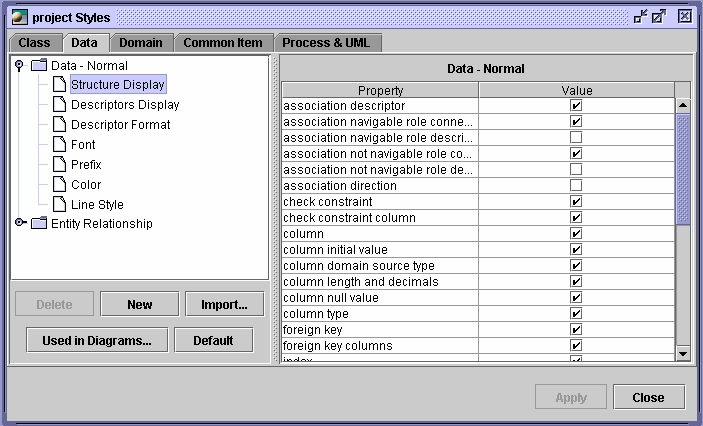

Using styles
Using styles to modify the project’s appearance
Style refers to the set of graphic display attributes, organized by type of diagram.
Many different styles can be used for each type of diagram to add information or a
personal touch to your project. Format > Project Styles > Tab
A diagram has a default style set used when you create a new graphical representation. You can change this default style by Format > Diagram Default Style.
Editing styles
The different styles are specific to a type of model. Still, it is possible to create a new
style or import one within a project or to a different one.

Characteristics
- Structure display: selection of attributes to be displayed
- Descriptor display: the object’s name/ physical name/ alias
- Descriptor format: special column formatting options
- Font: font formatting options of displayed descriptors.
- Prefix: text or image prefix of table, view and column.
- Color: color for background, border and text.
- Line style: dash style or highlight line
- Modifier-based display: the display of class field based on field attributes.